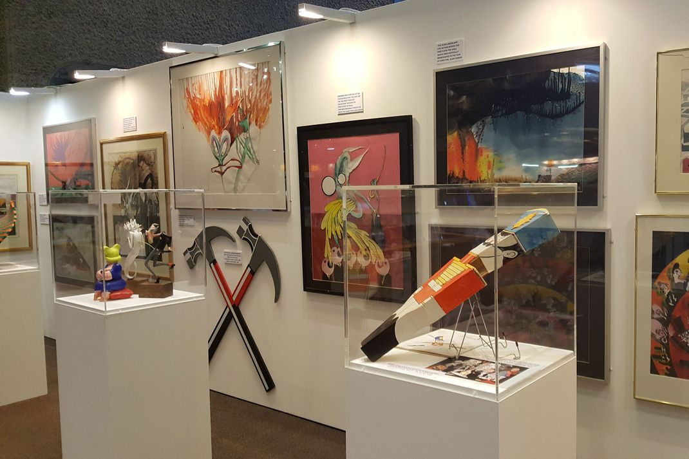

Early work
After briefly working in advertising, a profession he grew to dislike intensely, Scarfe's early caricatures of public figures were published in satirical magazine Private Eye throughout the 1960s and 1970s. Beginning in 1960, he produced illustrations for Punch, The Evening Standard and The Daily Sketch. The Sunday Times magazine assigned Scarfe to cover the 1964 US presidential election. He continued to work for The Sunday Times for two years, also producing several cover illustrations for Time magazine, including caricatures of The Beatles in 1967.
In the mid-1960s he took a job at the Daily Mail following a Dutch auction for his services with the Daily Express. His decision to work for the Daily Mail led to his estrangement from fellow cartoonist Ralph Steadman, alongside whom he had studied art at East Ham Technical College. Soon after, Steadman was commissioned to illustrate Scarfe and "produced an image that was half saint and half Superman, but with a disconnected heart". Scarfe spent only one year working for the Daily Mail, during which time he was sent to provide illustrations from the Vietnam War.
Pink Floyd and Roger Waters
Scarfe was approached to work with Pink Floyd after Roger Waters and Nick Mason both saw his animated BBC film A Long Drawn Out Trip. Pink Floyd's 1974 programme for their tour in the UK and US, in the form of a comic, included a centre-spread caricature of the band. Scarfe later produced a set of animated short clips used on the 1977 In The Flesh tour, including a full-length music video for the song Welcome to the Machine.
Scarfe also drew the illustrations for their 1979 album The Wall and provided animation and stage props, including enormous inflatable characters for the subsequent 1980–1981 concert tour in support of that album. In 1982, he worked on the film version of The Wall, although he and Roger Waters fell out with director Alan Parker during the latter stages of editing. As well as the artwork, Scarfe contributed 15 minutes' worth of elaborate animation to the film, including a sequence depicting the German bombing campaign over England during World War II, set to the song "Goodbye Blue Sky". Some of the animated footage was not original to the film, having been produced for and used in the 1980–81 concert tour, as well as being featured in the 1979 music video for "Another Brick in the Wall: Part 2".
Scarfe continued to work with Roger Waters after the latter left Pink Floyd, creating the graphics and animation for Waters' solo album The Pros and Cons of Hitch Hiking (1984) and its supporting tour. Scarfe was also involved in subsequent theatrical adaptations of The Wall, including The Wall Concert in Berlin (1990), and Waters' worldwide The Wall Live (2010-2013) tour, where his animations were projected on a vast scale. Scarfe's collaboration with Waters was marked in 2008 by the release of a signed limited-edition eight-print series, "Scarfe on the Wall", which contained a monograph book with an extended new interview with Scarfe and was signed by Roger Waters. Early editions of "Scarfe on The Wall" (by date of pre-order, not issue number) came with an additional print giving a total of nine in the set - making these the rarest and most valuable sets. In 2010, Scarfe's book The Making of Pink Floyd: The Wall was published, detailing the artist's work with Pink Floyd and Roger Waters from 1974 to 2010. The book contains contributions from Floyd members Roger Waters, Nick Mason, and David Gilmour, as well as director of the film, Alan Parker.
Hercules
Scarfe was approached to work on the 1997 Disney film Hercules by Ron Clements and John Musker, longtime fans who had risen to prominence within Disney following the success of The Little Mermaid. Scarfe worked as a conceptual character artist, designing almost all of the characters and then supervising the 900 Disney artists charged with adapting his designs for the film.
Postage stamps
The Royal Mail used Scarfe's artwork for a set of five commemorative postage stamps, issued on 23 April 1998. Honoring English comedians, the stamps feature Scarfe caricatures of Tommy Cooper, Eric Morecambe, Joyce Grenfell, Les Dawson and Peter Cook.
Theatre/stage design
Scarfe has designed sets for a number of operatic productions, including an adaptation of Roald Dahl's Fantastic Mr Fox. Following a chance meeting at a BBC prom he worked with Peter Hall on his version of Mozart's The Magic Flute, which drew critical acclaim. He is lined up to provide animation for Jim Steinman's Bat Out of Hell, a stage show featuring Steinman's music. Scarfe designed the sets and costumes for the English National Opera's 1988 production of Orpheus in the Underworld; among the costumes Scarfe designed were those of the characters Orpheus, Eurydice, and the Gods of Mount Olympus. He also produced all the costume and scenery designs for the 2002 Christopher Hampson production of The Nutcracker, for the English National Ballet.
Heroes and Villains
In 2003 Scarfe collaborated with the National Portrait Gallery and BBC Four to make caricatures of a number of famous Britons, to depict (along with guest commentary) their heroic and villainous attributes. Amongst the over 30 portraits he depicted included caricatures of Henry VIII, Winston Churchill, Queen Elizabeth I, Pete Best, Richard Branson, Adam Smith, William Blake, The Beatles, Agatha Christie and Diana, Princess of Wales. In 2009, he also created a caricature of James May out of Lego which was shown in episode 5 of James May's Toy Stories. Scarfe and Jane Asher also appeared in the episode.
Netanyahu cartoon
In its edition of 27 January 2013 (Britain's Holocaust Memorial Day), London's Sunday Times published a cartoon by Scarfe depicting Israel's Prime Minister Benjamin Netanyahu paving a wall with the blood and bodies of Palestinians, captioned "Israeli elections—will cementing peace continue?" The cartoon's timing and content was criticised by groups including the European Jewish Congress and the Board of Deputies of British Jews, with accusations of antisemitism leveled against Scarfe.
Unaware the cartoon would appear on Holocaust Memorial Day, Scarfe argued that the cartoon was clearly aimed specifically at Netanyahu and his policies, and were in response to his election, rather than being related to Holocaust Memorial Day. The newspaper's proprietor, Rupert Murdoch, apologised for the cartoon on Twitter, and acting editor Martin Ivens promised to be more vigilant in future.
The cartoon was published in the Israeli newspaper Haaretz, where Anshel Pfeffer discusses the cartoon in great detail, giving four reasons why, in his opinion, the cartoon is not antisemitic. Writer Howard Jacobson claimed the cartoon was not antisemitic. British Chief Rabbi Lord Sacks condemned the cartoon.
Recycled Radio
Since June 2013, Scarfe has presented a programme on BBC Radio 4 called Recycled Radio, which is described as "the chopped-up, looped-up, sped-up world...where old programmes are reused to explore a series of weighty subjects".
Bristol Charity Auction
In October 2013 Scarfe donated his time to decorate one of the large Wallace & Gromit statues to be auctioned for the Bristol hospital charity that was featured live on the BBC. His contribution finally ending up being sold to an internet bidder from Miami Florida where the statue was exported into a private collection, ultimately topping all estimates on value with a bid second highest only to the Pixar statue contribution.